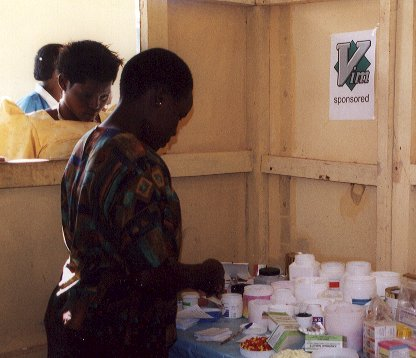

October 2001
Bram Moolenaar, treasurer of ICCF Holland, visited the Kibaale Children's centre in October 2001. This is his report.
First Impression
|
It has been more than a year since my last visit; the project has grown further and has become more mature. There are a few more buildings, more staff members, and more children being helped. The center now includes many departments, as can clearly be seen on the sign at the entrance. Since the center has been there for several years now, more attention needs to be paid to maintenance. Some of the latrines are being replaced by new ones, as are the rainwater tanks, which have rusted too much. (One of them burst a month ago.) The new tanks being installed are made of plastic instead of iron; they are more expensive, but last much longer. This choice is an indication that the project is aiming for the long term.
|

|
Uganda has become busier; this can be seen in the number of vehicles on the road and the thickness of the newspapers. Mobile phones have now almost reached Kibaale. You may have to climb a hill, and need good weather, but you can make a call all over the world if you want to. Unfortunately, it's not possible to call the project since hills block the signal. I suggested installing an antenna, but it's not clear where it can be obtained and whether it will work. To send a fax they still have to travel to Masaka, one hour by car.
School
The total number of children attending the school is now about 480. This year two new classes started, both P1 and S1 have doubled. The plan is to continue this in the coming years, so that the school doubles in size. One of the reasons is that when the school was looking for new students, there were more than twice as many children as available places. It's not easy to disappoint so many children. One thing that wasn't clear to me is how all this is going to be paid for.
Paul Horban is now leading the school. He and his wife Gwen arrived at the project in 2000 and are now familiar with the Ugandan way of doing things. I'm confident that the school will further improve under his guidance. The only problem is that he beat me at every game of Hearts we played! Gwen is leading the library, which is now in a larger building and is used by the students all the time. It's quite busy there right up until 9 PM when they are sent home. Some of the money donated by Vim users was used to improve the library.
The school is now officially registered. In November the secondary school exams will start for the first time at the center itself; previously the students would have to stay in Masaka for two weeks, with all the problems and costs that involved. This is another sign that the school has grown up and works together with the Ugandan government.
Clinic
|

|
The government of Uganda has made medical help free of charge. Although that sounds like a good idea, the result is that government-run clinics don't have their own income and have to solely rely on the government funds - but that is not enough. The result is that they often run out of essential medicine and the staff might not even be there. Instead, people from the community come to the KCC clinic. On average there are 600 patients each week. They pay a small fee, which includes medicine. This is not enough to cover the costs. But the patients can't really afford to pay more. Thus this can only be done with the help of donations and sponsors.
A new laboratory is almost ready for use at the clinic. It will allow doing basic blood and urine tests. I met the technician and he was eager to get started. I managed to change the microscope to make it work from a 12 volt car battery. The fridge also runs on this, thus the solar power system keeps both running. Once the lab is operating the nurses will be able to do better diagnosis and avoid having to send patients to the hospital in Rakai (which is expensive, takes time and requires transport being available.)
|
Children
I visited nine of the children sponsored through ICCF Holland. Most of them I had seen during my previous visit, so I could see how they had progressed. All were doing well food wise, since there was enough rain this year. The children appeared to be healthy, except for one that was coughing, because of the flu. The child I'm sponsoring myself is being treated for his epilepsy, which seems to help him quite a bit. He lives with his grandmother, who has eye problems. There is no other adult in this house, which makes it difficult for them to survive. I have given them a mattress and some extra blankets. We will need to continue giving them extra help.
|
One of the children was previously living in Kibaale town. Her aunt, with whom she was living, died earlier this year and she now lives with an uncle. One disadvantage of this is that we had to walk half an hour to the house - the same road they use to get water. For the child it must be awful to first lose her parents and then her guardian as well. Nevertheless, she was smiling all the time and enjoyed the gifts I brought her from her sponsor. It's amazing how she gets over all the problems and goes on with her life.
Only one of the children sponsored through ICCF Holland had dropped out. He entered our program last year, but this year he didn't come to school very often. They talked with him to try to find a way to solve this, but it didn't work out. Therefore we decided he will no longer be sponsored. Considering all the problems that these children cope with, it is to be expected that some of them drop out. Fortunately, we have not had many of these cases these past years (about 2 percent).
|

|
Small Loans Program
Kibaale is in a farming area. Most people have a piece of land and are able grow their own food. But they don't have money to buy essential items such as shoes or kerosine for their lamps. To help the families start a profitable business we have provided loans to a number of groups. These groups consist of about six women who join together and make a business plan. Each person in the group is responsible for paying back the loan, which helps a lot for the selection process. It looks like a very clever system to me, which should work much better than personal loans, but the program had only just started; thus we will see later what the results are.
Conclusion
I was very much impressed with the continued growth of the project. More children are being helped and I can see them grow up to become responsible persons. Essential needs are being provided, such as the medical help in the clinic. All this has to be paid for. Hopefully we will find new sponsors for the children in school and receive donations to run the clinic. I have again seen that the money is well spend and really helps the people in Kibaale.
more pictures
top
|